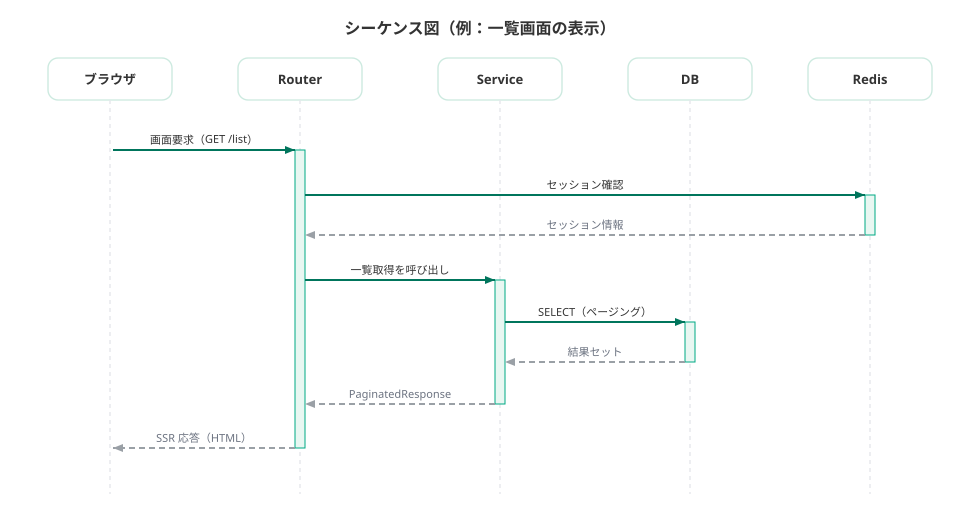

03 詳細設計 · 01/03
処理設計
複雑・致命的な処理のみ事前設計し、それ以外はコードとテストを正とする方針を定める。
記入ガイド
{{ }} を自アプリの値に置換。(例)行は削除。
全機能分は書かない。下の選定基準に該当する機能のみ本書に記す。
該当しない機能はコードとテストコードを詳細設計の正とする。
事前設計の対象選定基準: 各機能を下の基準で判定し、1つでも該当すれば本書に処理を記す。
処理フロー雛形: 対象機能ごとに複製。分岐・例外を明示する。
状態遷移雛形: 状態を持つ機能のみ。遷移条件と禁止遷移を明示する。
シーケンス雛形: 外部サービス・複数層をまたぐ処理のみ。トランザクション境界を注記する。
例外処理一覧: 上記対象機能の異常系を列挙。HTTP ステータスと対応を対で書く。
方針
- 詳細設計書は網羅的に書かない。外部仕様(基本設計)と受け入れ基準を AI に渡してコード生成し、生成されたコードとテストコードを詳細設計の正とする。
- 設計書とコードの乖離を避けるため、以下の選定基準に該当する処理のみ本書に事前記載しレビューする。
- 本書に記載しない機能は、基本設計の外部仕様・受け入れ基準・単体テスト観点表を根拠に実装する。
事前設計の対象選定基準
| 基準 | 該当例 | 事前設計 |
|---|---|---|
| 金額・料率・数量の計算を伴う | 請求額算出、按分、丸め処理 | 必須 |
| 状態遷移がある | 申請→承認→完了、下書き→公開 | 必須 |
| 複数テーブル横断の整合性が必要 | 在庫引当、二重登録防止 | 必須 |
| 誤りが業務・法務上致命的 | 権限判定、個人情報の開示範囲 | 必須 |
| 単純 CRUD・一覧・画面表示 | example 機能相当 | 不要(コードを正とする) |
処理フロー雛形

クリックで拡大
状態遷移雛形

クリックで拡大
シーケンス雛形

クリックで拡大
例外処理一覧
| ID | 発生条件 | 応答 | 対応 |
|---|---|---|---|
| (例) EX-01 | 対象レコード不存在 | 404 | エラーメッセージ表示 |
| EX-01 | {{異常条件}} | {{ステータス}} | {{対応}} |
| EX-02 | {{異常条件}} | {{ステータス}} | {{対応}} |
{{PROJECT_NAME}} 設計書雛形 · 正本は Markdown(docs-template/) · インデックス